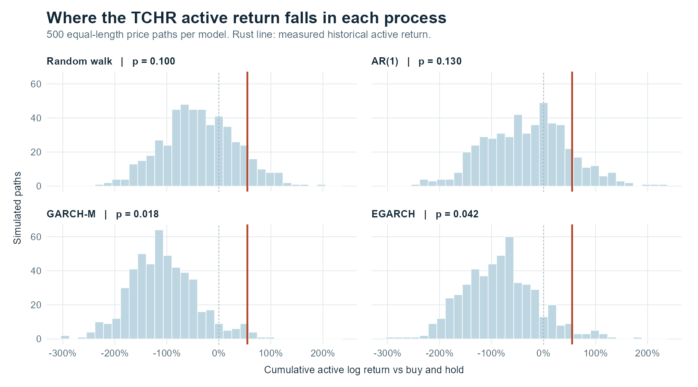
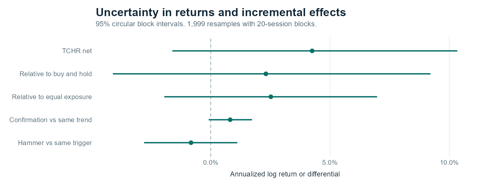
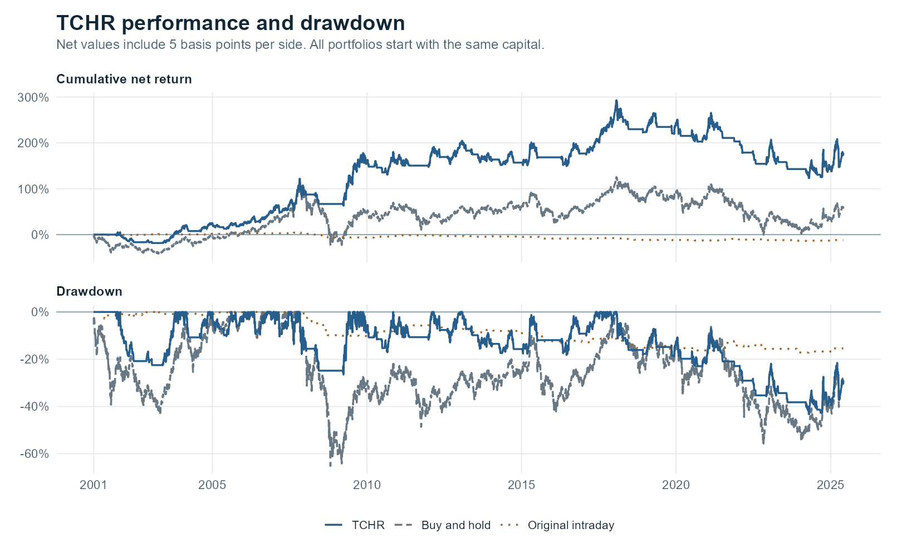
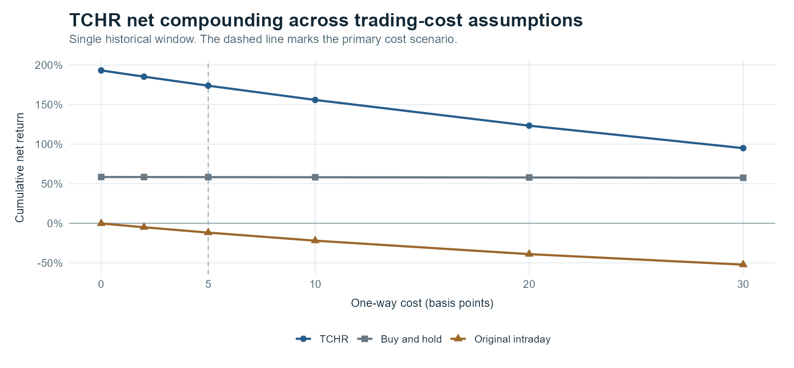

Study summary
I developed TCHR by combining a 100-day trend buffer with a hammer-line reversal setup. The close confirms the decision and the next session open executes it. I evaluate the fixed historical sample with a price-index benchmark, explicit trading-cost scenarios, and four stochastic Bootstrap checks.
The fixed historical result is positive and exceeds the same-window Hang Seng buy-and-hold return. The statistical layer measures how often the observed result appears under calibrated return and volatility structures, then adjusts the candidate-family comparison for data selection.
Strategy definition
Trend filter
TCHR enters when the close is at least 1% above the 100-session moving average. It exits when the close is at least 1% below the average. The buffer preserves the position between the two thresholds.
Hammer confirmation
A setup has a lower shadow longer than twice its body, an upper shadow shorter than its body, a close below the 20-session average, and a close within 4% of the 100-session support level. A close above the setup high confirms the reversal. The position is held for at most 10 sessions and exits after a close below the setup low or trend support.
Decisions use the completed bar. Position changes execute at the next session open. The account is long-only, uses a single full-capital position, and charges 5 basis points per side in the primary result.
Why the statistical layer matters
A historical backtest gives one realized path. I therefore generate 500 valid OHLC paths under each of four calibrated processes and rerun the complete TCHR ledger on every path.
- Random Walk Bootstrap resamples empirical daily returns.
- AR(1) Bootstrap preserves first-order return dependence.
- Student-t GARCH-M Bootstrap preserves conditional volatility and the mean equation.
- EGARCH Bootstrap preserves asymmetric volatility responses and uses the higher-likelihood converged fit.
Each path receives the same buy-and-hold benchmark and TCHR ablations. Circular block resampling estimates time-dependent uncertainty, and a max-t procedure adjusts the comparison across 51 candidate rules.


Fixed-sample results
| Measure | TCHR | Hang Seng buy-and-hold |
|---|---|---|
| Net compound return | +173.89% | +58.31% |
| Maximum drawdown | −43.25% | −65.18% |
| Primary cost | 5 bp per side | 0 |
| Candidate-family max-t adjusted p | 0.538 | — |


Reproduce the analysis
Run the fixed R entry point from the repository root. It rebuilds the numerical outputs, figures, report, and validation checks.
Rscript --vanilla strategy/run-fixed.R
Rscript --vanilla strategy/run-fixed.R verify